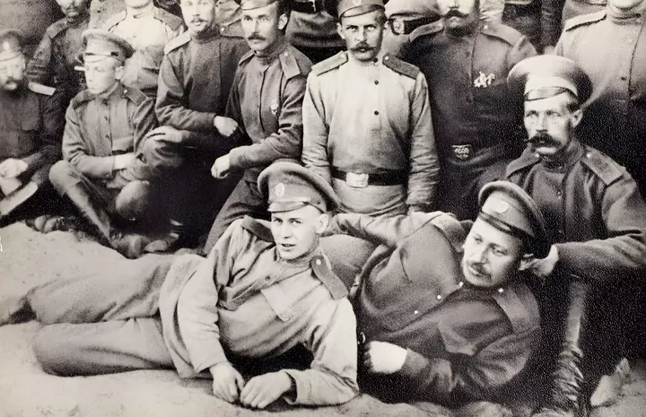

Свой первый рукописный сборник Есенин написал в 1912-м. Он назывался «Больные думы». По мнению авторов книги «Сергей Есенин. Биография» Олега Лекманова и Михаила Свердлова, этот сборник не издан, и это было к лучшему. Однако стихотворения того времени вошли в сборники, которые издавались в дальнейшем. В годы пребывания в Москве Сергей стал постоянным посетителем «Суриковского кружка писателей», в котором авторы-самоучки читали свои произведения. Первые публикации Есенина появились в детских журналах «Проталинка» и «Мирок». Он публиковался под псевдонимом «Аристон» в честь популярных тогда музыкальных ящиков. Его стихи того времени напоминали народные песни. Вскоре творения поэта появляются в модном журнале «Млечный путь». В этих публикациях мир знакомится с такими произведениями автора: «Береза», «Село», «Воробышки». «Пасхальный благовест». «Пороша» и «Сиротка. Русская сказка». В 1915 году, не чувствуя возможности прославиться в Москве, поэт направляется в Петроград. Там он знакомится с Александром Блоком, с помощью которого быстро приобретает авторитет в местном поэтическом мире. В этот период печатают его дебютный сборник «Радуница». В одной из поздних автобиографии Есенин пишет, что обязан этим успехом поэту и другу Николаю Клюеву. В этом сборнике были опубликованы стихотворения, которые многим знакомы по школьной программе. Какие стихи написал Сергей Есенин? Поэт написал выдающиеся стихи «Выткался на озере алый свет зари», «Чую радуницу Божью» и «По дороге идут богомолки», «Гой ты, Русь, моя родная» и другие. Бушует Первая мировая война, и Есенина призывают на службу. Благодаря своим связям он попадает в военно-санитарный поезд Ее Императорского Величества. Поэт служит санитаром, совмещает это с работой в канцелярии и одновременно выступает перед ранеными в лазаретах. Ему выпала честь прочесть свои стихи императрице и ее дочерям.
Поэт с большим вдохновением встречает Октябрьский переворот 1917 года. Этот момент знаменует начало нового этапа творчества поэта. Есенин пишет поэму «Товарищ» и становится пророком нового времени. В это же время поэт попадает в круги имажинистов (Анатолий Мариенгоф, Николай Эрдман, Вадим Шершеневич, Надежда Вольпин), которые отдавали приоритет в творчестве ярким метафорам. Успех и городская жизнь кружат голову поэту, его настигает творческий кризис, который проявляется в эпатаже — пьянстве, дебоширстве, драках. Этот период жизни Есенина отражен в его городском цикле, в том числе в стихотворениях «Москва кабацкая», «Трерядница», «Стихи скандалиста», «Исповедь хулигана». Поэт в это время пишет поэму «Пугачев».